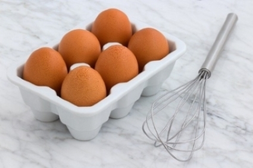

Why Egg Whites Demand Clean Bowls for Whisking
Kristi Yang | June 8, 2020
I’ve always hated washing dishes. It was the worst part of baking for me. So even if the recipe called for separate bowls, I would be a bit lazy and just use the same bowl or grab a bowl I just washed. It was easier that way— less dishes. And honestly, I couldn’t really taste the difference. It seemed to work for me, until the time I decided to try making tiramisu.
I was making the mascarpone cream and started with the egg yolks, sugar, and vanilla extract. Once that was done, I needed to whisk egg whites until firm peaks formed. This step was extremely crucial because the cream’s fluffy lift and texture solely came from these firm peaks. So if they didn’t form, the cream would be more soup-like rather than cream-like. But, being the lazy baker that I am, I didn’t grab a separate bowl to whisk the egg whites. I poured the egg yolk mixture into a ceramic bowl, and rinsed out the bowl for the stand mixer. I added in the egg whites and waited 2 minutes, then 5 minutes, then 7 minutes… It was strange. No matter what speed I put it on or how long I waited, the egg whites were not in the mood to form any kind of peak.
I looked online to see if there was any way I could salvage my egg whites, but everything kept leading to no. I was frustrated at that point. Not only were the egg whites not doing what I wanted, but I couldn’t really use them in my mascarpone cream anymore. After repurposing the only egg whites by adding them into a winter melon soup, I went to consult my favorite food chemist, my mom.
First, I needed to learn how egg whites turn into fluffy foams. It turns out that whisking egg whites is actually heating the egg whites. When whipping the egg whites, their proteins become denatured – reminds me of the classic biology joke, “you’re so hot you denature my proteins.” So denaturing proteins is essentially breaking them down so that their structure can unfold. This unfolded egg white structure exposes its proteins who are kind of like Dr. Jekyll and Mr. Hyde. The proteins contain two different types of amino acids that are opposite of each other. Some of them are what’s known as hydrophilic, meaning that they are attracted to water, while others are hydrophobic, meaning that they are repelled by water. So when the egg whites are whisked, these the water-loving proteins run towards the water already in the egg whites, and the water-repelling proteins run away from the water, in this case, air. Once the proteins are all bond together, the foam is created and the bowl is left with beautifully whipped peaks.
So with this context in mind, I went to figure out what was so bad about not thoroughly washing the bowl before whisking. With an unwashed bowl, it’s likely that there is a bit of leftover fat from the egg yolk or butter or even the dish detergent. At first, I didn’t think that a little bit of fat could cause that many problems, but it turns out that even the smallest trace amount of fat will block the egg whites from forming peaks. Egg whites can be a bit picky – something that I can relate to. They don’t love to bind with each other, but they’ll do it if it’s the only thing available. But if you introduce them to any kind of fat molecule, they’ll choose to bind with those instead. When that happens, the egg whites will no longer have the right structure to create any kind of peak.
And so with that in mind, I learned that even though it’s more work for me, I will have to get a separate bowl or thoroughly wash and dry a bowl before whisking fluffy egg white peaks.
Some Tips I Found:
- Try not to add salt to egg whites.
It will add a bit of flavor, but be careful! The salt will also decrease the foam’s ability to hold. - Separate eggs when cold, but let it get to room temperature before using.
It’s easiest to separate egg yolks & whites when the egg is still cold from the refrigerator, but egg whites can whip to greater volume when they’re at room temperature. - Add a bit of cream of tartar.
A bit of an acid like cream of tartar or lemon juice or vinegar can help the egg white structure stay fluffy and can prevent overbeating. - Use a copper bowl.
The copper helps to stabilize the egg whites so that the peaks can hold and can prevent overbeating.